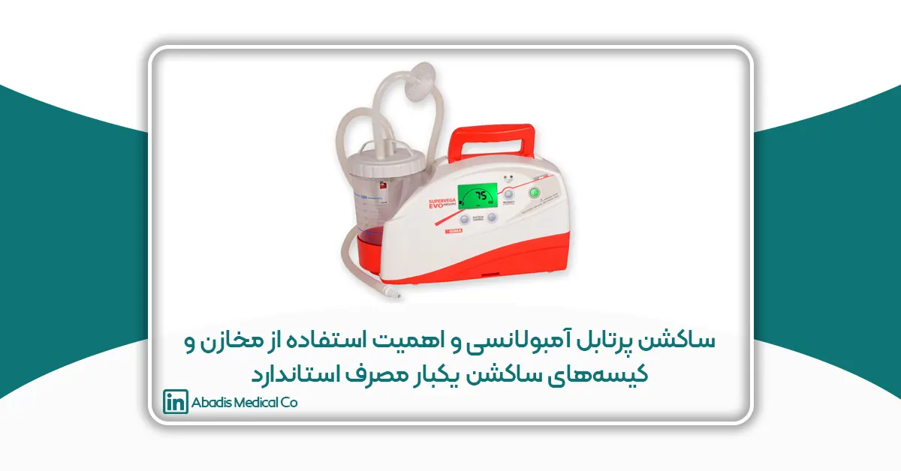

مقدمه
در خدمات اورژانس پیشبیمارستانی، مدیریت صحیح و بهموقع راه هوایی بیمار یکی از حیاتیترین مداخلات درمانی محسوب میشود. بسیاری از بیماران اورژانسی، بهویژه در حوادث ترومایی، ایستهای قلبی–ریوی، کاهش سطح هوشیاری و شرایط بحرانی تنفسی، با تجمع ترشحات، خون یا مایعات در مسیر تنفسی مواجه هستند؛ وضعیتی که در صورت عدم تخلیه سریع و مؤثر، میتواند منجر به انسداد راه هوایی، کاهش اکسیژنرسانی، آسیبهای برگشتناپذیر مغزی و حتی مرگ شود.
در این میان، ساکشن پرتابل آمبولانسی بهعنوان یکی از تجهیزات کلیدی اورژانس پیشبیمارستانی، نقش تعیینکنندهای در حفظ باز بودن راه هوایی و تأمین شرایط پایدار برای ادامه اقدامات درمانی ایفا میکند. عملکرد مؤثر این تجهیز نهتنها به قدرت مکش دستگاه، بلکه به طراحی و انتخاب صحیح اجزای جانبی آن، از جمله مخزن و کیسه ساکشن، وابسته است.
با توجه به محدودیت فضای داخلی آمبولانس، تعداد بالای مأموریتها، شرایط متغیر محیطی و ضرورت رعایت دقیق اصول کنترل عفونت (Infection Control)، استفاده از سیستمهای ساکشن سنتی با مخازن حجیم و نیازمند شستوشو، چالشهای متعددی را برای پرسنل اورژانس ایجاد میکند. این چالشها شامل افزایش زمان آمادهسازی، افزایش ریسک آلودگی متقاطع، تماس مستقیم با ترشحات عفونی و کاهش بهرهوری عملیاتی آمبولانس است.
در سالهای اخیر، رویکردهای نوین در طراحی تجهیزات پزشکی اورژانسی بر پایه کاهش ریسکهای بهداشتی، افزایش ایمنی بیمار و پرسنل و تسهیل فرآیندهای کاری شکل گرفتهاند. یکی از مصادیق بارز این رویکرد، استفاده از کیسههای ساکشن یکبار مصرف استاندارد در کنار مخازن ساکشن پرتابل با حجم بهینه، بهویژه مخازن ۱ لیتری است؛ راهکاری که ضمن تأمین ظرفیت کافی برای اغلب مأموریتهای پیشبیمارستانی، کارایی، ایمنی و سرعت عمل سیستم ساکشن آمبولانسی را بهطور قابل توجهی ارتقا میدهد.
این مقاله با هدف بررسی علمی و کاربردی ساکشنهای پرتابل آمبولانسی و تبیین اهمیت استفاده از مخازن و کیسههای یکبار مصرف استاندارد تهیه شده است و تلاش دارد با نگاهی فنی و مبتنی بر الزامات بهداشتی، به تصمیمگیری آگاهانهتر در انتخاب تجهیزات ساکشن در خدمات اورژانسی کمک کند.
نقش ساکشن پرتابل در مدیریت راه هوایی در آمبولانس
ساکشن پرتابل آمبولانسی در شرایط متعددی مورد استفاده قرار میگیرد، از جمله:
-
بیماران ترومایی با خونریزی دهانی یا تنفسی
-
بیماران با کاهش سطح هوشیاری
-
موارد احیای قلبی–ریوی (CPR)
-
بیماران دچار انسداد راه هوایی
-
انتقال بیماران بین مراکز درمانی
در تمامی این موارد، عملکرد پایدار، مکش یکنواخت و قابلیت استفاده سریع دستگاه ساکشن، ارتباط مستقیمی با کاهش عوارض بالینی و افزایش شانس بقای بیمار دارد. هرگونه اختلال در عملکرد سیستم ساکشن میتواند روند درمان را با چالش جدی مواجه کند.
محدودیتها و چالشهای استفاده از مخازن ساکشن با حجم بالا
در بسیاری از آمبولانسها، همچنان از مخازن ساکشن با حجمهای بالا (۲ یا ۳ لیتری) استفاده میشود. اگرچه این مخازن ظرفیت بیشتری دارند، اما در عمل با چالشهای قابل توجهی همراه هستند:
-
اشغال فضای بیشتر در کابین محدود آمبولانس
-
افزایش وزن تجهیزات قابل حمل
-
دشواری تخلیه و شستوشوی مخزن پس از هر مأموریت
-
افزایش ریسک تماس پرسنل با ترشحات عفونی
-
افزایش احتمال آلودگی متقاطع (Cross Contamination)
-
اتلاف زمان برای آمادهسازی مجدد دستگاه
این موارد در مأموریتهای پرتعداد اورژانسی میتواند کارایی سیستم ساکشن را کاهش داده و فشار کاری پرسنل اورژانس را افزایش دهد.
کیسه ساکشن یکبار مصرف ۱ لیتری؛ انتخابی بهینه برای آمبولانس
استفاده از کیسه ساکشن یکبار مصرف ۱ لیتری بهعنوان یک راهکار علمی و عملی، توانسته بسیاری از چالشهای فوق را برطرف کند. بررسیهای میدانی نشان میدهد که حجم ۱ لیتری برای بخش عمدهای از مأموریتهای پیشبیمارستانی کاملاً کافی بوده و تعادل مناسبی میان ظرفیت، وزن و سهولت استفاده ایجاد میکند.
مزایای علمی و عملی کیسه ساکشن یکبار مصرف ۱ لیتری
-
حذف کامل نیاز به شستوشو و ضدعفونی مخزن
-
کاهش قابل توجه ریسک انتقال عوامل بیماریزا
-
کاهش آلودگی متقاطع بین بیماران
-
افزایش ایمنی شغلی پرسنل اورژانس
-
تعویض سریع و آسان پس از هر مأموریت
-
مدیریت بهداشتی پسماندهای عفونی
این مزایا باعث میشود Disposable Suction Bag به گزینهای استاندارد در ساکشنهای پرتابل آمبولانسی تبدیل شود.
اهمیت استفاده از مخازن ساکشن ۱ لیتری در سیستمهای پرتابل
در کنار کیسههای یکبار مصرف، استفاده از مخازن ساکشن پرتابل استاندارد با حجم ۱ لیتر نقش مکمل و تعیینکنندهای در بهینهسازی عملکرد سیستم ساکشن دارد. این مخازن بهگونهای طراحی میشوند که:
-
وزن و حجم کلی سیستم ساکشن را کاهش دهند
-
فضای کمتری در آمبولانس اشغال کنند
-
نصب و جداسازی سریع و ایمن داشته باشند
-
سازگاری کامل با کیسههای ساکشن یکبار مصرف داشته باشند
-
کنترل دقیقتری بر حجم مکش فراهم کنند
ترکیب مخزن ۱ لیتری با کیسه ساکشن یکبار مصرف ۱ لیتری، یک سیستم کارآمد، ایمن و متناسب با نیازهای واقعی اورژانس پیشبیمارستانی ایجاد میکند.
تأثیر استفاده از سیستمهای ساکشن بهینه بر عملکرد پرسنل اورژانس
کاهش مراحل آمادهسازی و حذف فرآیند شستوشوی مخزن، تأثیر مستقیمی بر عملکرد پرسنل اورژانس دارد. این موضوع باعث میشود:
-
زمان بیشتری برای رسیدگی مستقیم به بیمار فراهم شود
-
آمبولانس در مدتزمان کوتاهتری برای مأموریت بعدی آماده شود
-
استرس و ریسک تماس با ترشحات عفونی کاهش یابد
در نهایت، این عوامل منجر به افزایش بهرهوری سیستم اورژانس و ارتقای کیفیت خدمات درمانی میشوند.
ملاحظات بهداشتی و الزامات ایمنی در ساکشنهای پرتابل
رعایت اصول کنترل عفونت (Infection Control) و مدیریت پسماندهای پزشکی (Medical Waste Management) در محیط آمبولانس از اهمیت بالایی برخوردار است. استفاده از کیسههای ساکشن یکبار مصرف و مخازن استاندارد ۱ لیتری، در صورت تولید مطابق با الزامات تجهیزات پزشکی، بهطور مؤثری این اهداف را محقق میکند و ایمنی بیمار و پرسنل را بهصورت همزمان ارتقا میدهد.
جمعبندی
در محیطهای پیشبیمارستانی و مأموریتهای اورژانسی، مدیریت صحیح راه هوایی و تخلیه ایمن ترشحات از حیاتیترین اقدامات درمانی محسوب میشود. ساکشن پرتابل آمبولانسی بهعنوان یکی از تجهیزات کلیدی در این فرآیند، نقش مستقیمی در حفظ حیات بیمار، کاهش عوارض تنفسی و ارتقای کیفیت خدمات فوریتهای پزشکی ایفا میکند. از اینرو، انتخاب صحیح اجزای این سیستم، بهویژه مخزن و کیسه ساکشن، اهمیت ویژهای دارد.
بررسیهای فنی و عملی نشان میدهد که استفاده از مخازن ساکشن با حجمهای بالا در آمبولانسها، علیرغم ظرفیت بیشتر، میتواند منجر به افزایش وزن تجهیزات، اشغال فضای محدود کابین، افزایش ریسک آلودگی متقاطع و اتلاف زمان پرسنل برای شستوشو و آمادهسازی مجدد شود. در مقابل، بهکارگیری کیسههای ساکشن یکبار مصرف استاندارد با حجم ۱ لیتر در کنار مخازن ساکشن پرتابل ۱ لیتری، راهکاری بهینه، ایمن و منطبق با نیازهای واقعی خدمات اورژانس پیشبیمارستانی به شمار میرود.
این ترکیب، ضمن تأمین ظرفیت مناسب برای اغلب مأموریتهای آمبولانسی، باعث کاهش چشمگیر ریسک انتقال عوامل بیماریزا، بهبود کنترل عفونت، افزایش ایمنی شغلی پرسنل اورژانس و تسهیل فرآیندهای عملیاتی میشود. حذف مراحل زمانبر شستوشو و ضدعفونی مخزن، آمبولانس را در مدتزمان کوتاهتری برای مأموریت بعدی آماده میسازد و تمرکز تیم درمان را بر مراقبت مستقیم از بیمار افزایش میدهد.
در نهایت، میتوان گفت که استفاده از سیستمهای ساکشن پرتابل بهینهشده، متشکل از مخازن استاندارد و کیسههای ساکشن یکبار مصرف، نهتنها یک انتخاب فنی، بلکه یک تصمیم راهبردی در جهت ارتقای ایمنی بیمار، کارایی سیستم اورژانس و رعایت اصول کنترل عفونت است. شرکت مخازن طبی آبادیس با تولید مخازن ساکشن پرتابل استاندارد و سازگار با کیسههای یکبار مصرف، نقش مؤثری در توسعه تجهیزات پزشکی ایمن و کارآمد برای خدمات اورژانسی کشور ایفا میکند.
منابع
-
World Health Organization (WHO).
Medical devices: managing the mismatch – an outcome of the priority medical devices project.
World Health Organization, 2010. -
American Heart Association (AHA).
Guidelines for Cardiopulmonary Resuscitation and Emergency Cardiovascular Care.
Circulation Journal, Latest Update. -
ISO 13485:2016.
Medical devices — Quality management systems — Requirements for regulatory purposes.
International Organization for Standardization. -
ISO 14971:2019.
Medical devices — Application of risk management to medical devices.
International Organization for Standardization. -
ISO 10993 Series.
Biological evaluation of medical devices.
International Organization for Standardization. -
Centers for Disease Control and Prevention (CDC).
Guidelines for Infection Control in Healthcare Settings.
U.S. Department of Health & Human Services.